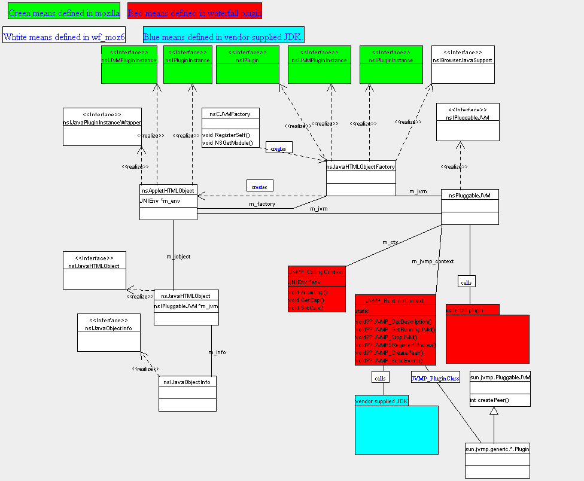

This document is a scratch pad for helping me understand how waterfall
works. I will use mozilla and the debugger as a guide. I'll start by
discovering how mozilla hooks into waterfall.
Refer to this diagram:

Waterfall Metrics
=================
144 files total
76 java
3 cpp
25 c
40 h
30849 SLOC including comments.
Waterfall Bootstrapping
=======================
Mozilla hooks in to waterfall by virtue of the wf_moz6 module being an
XPCOM component.
D:\Projects\trunk\mozilla\wf_moz6\wf_moz6\src\nsCJVMFactory.cpp
This file defines the necessary macro to be an XPCOM component:
NS_IMPL_NSGETMODULE("nsCJVMModule", components);
The second argument is an array of nsModuleComponentInfo structs.
static nsModuleComponentInfo components[] =
{
{ "Waterfall API-based JVM Service",
NS_PLUGGABLEJVM_CID,
NS_INLINE_PLUGIN_CONTRACTID_PREFIX "application/x-java-vm",
nsJavaHTMLObjectFactory::Create,
},
};
nsModuleComponentInfo is defined in:
D:\Projects\trunk\mozilla\dist\include\nsIGenericFactory.h
The important elements in this struct are the third and forth:
const char* mContractID;
NSConstructorProcPtr mConstructor;
the mContractID tells XPCOM what our programmatic name is, and the
mConstructor tells XPCOM what to call to construct an instance of the
module. In waterfall's case, this is nsJavaHTMLObjectFactory::Create,
defined in
D:\Projects\trunk\mozilla\wf_moz6\wf_moz6\src\nsJavaHTMLObjectFactory.cpp
As you may know every dll in the components directory is interrogated at
mozilla startup in what is known as "auto-registration". This is how
waterfall gets picked up. The waterfall library is called
dist\win32*\bin\components\ojijvm.dll. Our Create method gets called
here:
nsJavaHTMLObjectFactory::Create(nsISupports * 0x00000000, const nsID & {...}, void * * 0x0012f8e4) line 92
nsGenericFactory::CreateInstance(nsGenericFactory * const 0x0173a2d0, nsISupports * 0x00000000, const nsID & {...}, void * * 0x0012f8e4) line 56
nsComponentManagerImpl::CreateInstance(nsComponentManagerImpl * const 0x00a96c80, const nsID & {...}, nsISupports * 0x00000000, const nsID & {...}, void * * 0x0012f8e4) line 1199 + 24 bytes
nsComponentManager::CreateInstance(const nsID & {...}, nsISupports * 0x00000000, const nsID & {...}, void * * 0x0012f8e4) line 82
nsServiceManagerImpl::GetService(nsServiceManagerImpl * const 0x00a955a0, const nsID & {...}, const nsID & {...}, nsISupports * * 0x0012f9a4, nsIShutdownListener * 0x00000000) line 344 + 19 bytes
nsServiceManagerImpl::GetService(nsServiceManagerImpl * const 0x00a955a0, const char * 0x024536d0, const nsID & {...}, nsISupports * * 0x0012f9a4, nsIShutdownListener * 0x00000000) line 492
nsServiceManager::GetService(const char * 0x024536d0, const nsID & {...}, nsISupports * * 0x0012f9a4, nsIShutdownListener * 0x00000000) line 605
nsGetServiceByContractID::operator()(const nsID & {...}, void * * 0x0012f9a4) line 64 + 22 bytes
nsCOMPtr::assign_from_helper(const nsCOMPtr_helper & {...}, const nsID & {...}) line 970 + 18 bytes
nsCOMPtr::nsCOMPtr(const nsCOMPtr_helper & {...}) line 552
nsJVMManager::StartupJVM() line 605 + 30 bytes
nsJVMManager::MaybeStartupLiveConnect() line 788 + 20 bytes
nsJVMManager::StartupLiveConnect(nsJVMManager * const 0x01739118, JSRuntime * 0x00f97210, int & 0) line 128 + 11 bytes
nsJSEnvironment::nsJSEnvironment() line 1505 + 49 bytes
nsJSEnvironment::GetScriptingEnvironment() line 1446 + 27 bytes
NS_CreateScriptContext(nsIScriptGlobalObject * 0x0169c7b0, nsIScriptContext * * 0x01693680) line 1545 + 5 bytes
nsDocShell::EnsureScriptEnvironment(nsDocShell * const 0x016935d0) line 4384 + 50 bytes
nsWebShell::GetInterface(nsWebShell * const 0x016935f4, const nsID & {...}, void * * 0x0012fc00) line 327 + 19 bytes
nsGetInterface::operator()(const nsID & {...}, void * * 0x0012fc00) line 37 + 31 bytes
nsCOMPtr::assign_from_helper(const nsCOMPtr_helper & {...}, const nsID & {...}) line 970 + 18 bytes
nsCOMPtr::nsCOMPtr(const nsCOMPtr_helper & {...}) line 552
nsAppShellService::GetHiddenWindowAndJSContext(nsAppShellService * const 0x00b579b0, nsIDOMWindowInternal * * 0x0012fca8, JSContext * * 0x0012fcac) line 727 + 32 bytes
nsAppShellService::SetXPConnectSafeContext() line 191 + 40 bytes
nsAppShellService::CreateHiddenWindow(nsAppShellService * const 0x00b579b0) line 251
main1(int 1, char * * 0x00a95930, nsISupports * 0x00000000) line 987
main(int 1, char * * 0x00a95930) line 1298 + 37 bytes
mainCRTStartup() line 338 + 17 bytes
KERNEL32! 77f1ba3c()
Regarding nsJVMManager.cpp StartupJVM() on the stack: this is where the
first modification in the patch to bug 72708 comes into play:
NS_WITH_SERVICE(nsIPlugin, f,
NS_INLINE_PLUGIN_CONTRACTID_PREFIX NS_JVM_MIME_TYPE,
&err);
if (NS_FAILED(err) || !f) {
err = pluginHost->GetPluginFactory(NS_JVM_MIME_TYPE, &pluginFactory);
}
else {
pluginFactory = f;
}
Note that the contract ID matches the one specified in
nsCJVMFactory.cpp. Here Nikolay has modified the oji code to first
check for waterfall, then to fall back on the
pluginHost->CreatePlugin().
ns nsJavaHTMLObjectFactory::Create, we create an instance of
nsJavaHTMLObjectFactory. This has a reference to an nsIPluggableJVM
impl. We send nsJavaHTMLObjectFactory Initialize(). In Initialize(),
we send StartupJVM to nsIPluggableJVM. This calls
nsPluggableJVM::loadPluginDLL(). As far as I can tell this is where the
first call into the Waterfall plugin code occurrs. loadPluginDLL() opens
the jvmp.dll, and finds the symbol "JVMP_GetPlugin". This calls
loadJVM(), which opens the JDK's JVM dll and looks for several symbols.
Here there is ifdef'd code for each of the supported JVMS:
#ifdef _JVMP_IBMJVM
#ifdef _JVMP_SUNJVM
etc.
The symbols loaded from the JVM dll are:
JNI_GetDefaultJavaVMInitArgs
JNI_CreateJavaVM
JNI_GetCreatedJavaVMs
JVMP_GetPlugin returns a pointer to a static JVMP_RuntimeContext
instance. JVMP_RuntimeContext is defined in
d:\Projects\blackwood\eng\wf\public\jvmp.h. The RuntimeContext is a
collection pointers to functions defined in java_plugin.c.
nsPluggableJVM keeps a pointer to the JVMP_RuntimeContext.
After loading the jvmp.dll, we call nsPluggableJVM::initJVM().
nsPluggableJVM::initJVM() calls JVMP_GetRunningJVM(), in
d:\Projects\blackwood\eng\wf\src\plugin\java_plugin.c. This calls
JVMP_initJavaClasses(). Here is the first time we see JNI constructs.
We find the class sun/jvmp/generic/{motif,win32}/Plugin.java and call its
startJVM() method. This returns an instance of the java class
PluggableJVM. This is saved as the static native var
JVMP_PluginInstance. The class Plugin is saved as JVMP_PluginClass.
After returning, we call JVMP_initClassPath, which pulls in the java
classpath from the CLASSPATH env var. This results in creating an array
like this:
Java Plugin: JVM option[0]=-Djava.class.path=D:\Projects\blackwood\eng\wf\build\win32\classes;
Java Plugin: JVM option[1]=-Djava.library.path=D:\Projects\blackwood\eng\wf\build\win32;D:\Projects\blackwood\eng\wf\build\win32\java\jre\lib\win32:
Java Plugin: JVM option[2]=-Djava.home=D:\Projects\blackwood\eng\wf\build\win32/java/jre
Java Plugin: JVM option[3]=-Xbootclasspath:D:\Projects\blackwood\eng\wf\build\win32\java\jre\classes;D:\Projects\blackwood\eng\wf\build\win32\java\jre\lib\rt.jar;D:\Projects\blackwood\eng\wf\build\win32\java\jre\lib\i18n.jar
Java Plugin: JVM option[4]=-Djava.security.manager
Java Plugin: JVM option[5]=-Djvmp.home=D:\Projects\blackwood\eng\wf\build\win32
Java Plugin: JVM option[6]=-Djava.security.policy=file:D:/Projects/blackwood/eng/wf/build/win32/plugin.policy
We then try to get access to a JavaVM, using JVMP_ReuseJVM(). This uses
the JVMMethods struct, defined in java_plugin.c. This is a struct of
function pointers to JVM methods.
We then call JVMP_EnableCapabilities(). This is the first sign of
security code in waterfall. Let me step out of context to define two
terms. A Principal is an entity responsible for a script in some way.
There are several kinds of principals. A certificate principal
represents the signer of the script. A certificate principal is
responsible for proving the script is from who it says it is. Another
way of saying it is that a certificate principal is responsible for the
script's authentication. The set of principals is fixed at the time the
page is loaded. Each principal has a set of capabilities, each of which
can be enabled or disabled by the system and the user.
I don't know what a system principal is, but it represents mozilla.org?
How does a codebase principal differ from a certificate principal? They
both seem to deal with the issue of authentication.
Back to calling JVMP_EnableCapabilities(). This manipulates the
JVMP_CallingContext, a struct with function pointers for manipulating
Caps. Caps is a term bandied about by security types. It's short for
capabilities. If someone could come up with a better definition, I'd
appreciate it. At this point we call back into java for the
PluggableJVM.enableCapabilities() method, passing in the byte array for
the caps and an array of principals.
We return and pop up the java console, then return from
nsJavaHTMLObjectFactory::Create(), returning an instance of
nsJavaHTMLObjectFactory typed as a nsIPlugin. Our being typed this way
enables us to provide the necessary services to the browser. This
completes the bootstrapping process.
How an Applet is instantiated
=============================
The normal plugin instantiation and initialization proccess occurrs.
This includes scanning the plugin directory for any plugins that respond
to the applet mime type. Of course none are found since waterfall
requires that the java plugin is not installed. Then we try to
instantiate a plugin using the contract id:
"@mozilla.org/inline-plugin/application/x-java-vm". Remember that
waterfall declared itself as responding to that contractID in
D:\Projects\trunk\mozilla\wf_moz6\wf_moz6\src\nsCJVMFactory.cpp. This
happens here:
nsJavaHTMLObjectFactory::Create(nsISupports * 0x00000000, const nsID & {...}, void * * 0x0012a944) line 104
nsGenericFactory::CreateInstance(nsGenericFactory * const 0x0173beb0, nsISupports * 0x00000000, const nsID & {...}, void * * 0x0012a944) line 56
nsComponentManagerImpl::CreateInstance(nsComponentManagerImpl * const 0x00a96bc0, const nsID & {...}, nsISupports * 0x00000000, const nsID & {...}, void * * 0x0012a944) line 1199 + 24 bytes
nsComponentManagerImpl::CreateInstanceByContractID(nsComponentManagerImpl * const 0x00a96bc0, const char * 0x0012a948, nsISupports * 0x00000000, const nsID & {...}, void * * 0x0012a944) line 1239
nsComponentManager::CreateInstance(const char * 0x0012a948, nsISupports * 0x00000000, const nsID & {...}, void * * 0x0012a944) line 94
nsPluginHostImpl::SetUpPluginInstance(nsPluginHostImpl * const 0x0173a4b4, const char * 0x0b7d21ec, nsIURI * 0x0e0e6440, nsIPluginInstanceOwner * 0x0e0e6950) line 2758 + 28 bytes
nsPluginHostImpl::InstantiateEmbededPlugin(nsPluginHostImpl * const 0x0173a4b4, const char * 0x0b7d21ec, nsIURI * 0x0e0e6440, nsIPluginInstanceOwner * 0x0e0e6950) line 2461 + 24 bytes
nsObjectFrame::InstantiatePlugin(nsIPresContext * 0x0d0a3290, nsHTMLReflowMetrics & {...}, const nsHTMLReflowState & {...}, nsIPluginHost * 0x0173a4b4, const char * 0x0b7d21ec, nsIURI * 0x0e0e6440) line 1037
nsObjectFrame::Reflow(nsObjectFrame * const 0x0125596c, nsIPresContext * 0x0d0a3290, nsHTMLReflowMetrics & {...}, const nsHTMLReflowState & {...}, unsigned int & 0) line 853 + 49 bytes
The plugin is looking for an nsIPluginInstance instance, which waterfall
returns in the form of an nsAppletHTMLObject instance. This guy also
implements nsIJVMPluginInstance. It creates and has a nsIJavaHTMLObject
instance. According to the comments, the nsIJavaHTMLObject instance is
the "is instance of visible object on browser's page controlled by Java
code, like APPLET or OBJECT tag content." This eventually calls into
the java class PluggableJVM.createPeer(). The nsIJavaHTMLObject
instance creates and keeps an nsIJavaObjectInfo instance.
Comments and Questions
======================
How does the java console get hooked up to nsIJVMConsole?
nsJavaHTMLObjectFactory::Initialize()
should use do_getService() instead of nsServiceManager::GetService().
shouldn't use stock malloc, should use nsCRT.
nsPluggableJVM::StartupJVM()
shouldn't use env vars. At the very least, shouldn't use stock
getenv, should use nsCRT.
Console shouldn't be hard coded to visible.
JVMP_initClassPath(), JVMP_GetPlugin(), loadJVM(), etc
I know these classes are independent of mozilla. Is it ok to use the
stock malloc() and getenv()? Should waterfall c plugin classes use
nspr?
Is this ifdefing allowable:
#ifdef _JVMP_IBMJVM
#ifdef _JVMP_SUNJVM
In loadJVM() we have the filepaths to the jvm dll hard coded, is this
safe?
Is it safe to assume these symbols are in the jvm dll?
JNI_GetDefaultJavaVMInitArgs
JNI_CreateJavaVM
JNI_GetCreatedJavaVMs
Or do we assume we'll have a different jvmp for each released Java
plugin version? I *do* think this is a safe assumption.
* JRE 1.3.0_01 doesn't have classic vm
* when running ./plugin_host, you must start the JVM, then enable system
capabilities in order to do most anything else.
* He has inconsistent environment variables for things.
JAVA_HOME == JDK
* The documentation refers to files that aren't there. build.txt refers
to ../java/makefile.win, when it should be ../build/java/makefile.win.
* Why do you have to copy the Java directory into the build area on
win32, and link it on unix?
* Why does he have a jni.h in his tree? How does it differ from the
stock jni.h?
* Building is a mess. Each platform has unnecessarily different
conventions, many errors in build instructions.
* Can't build wf_moz6: Syntax errors.